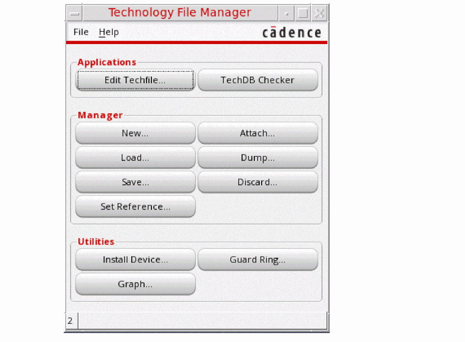
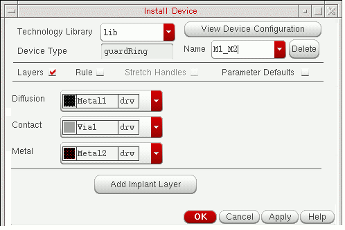
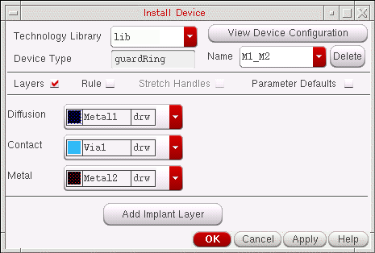
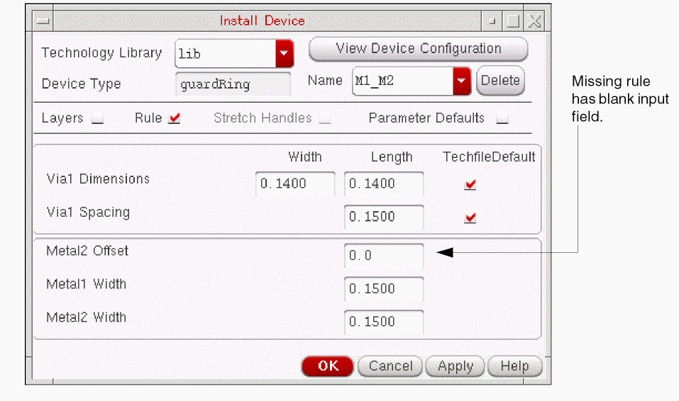
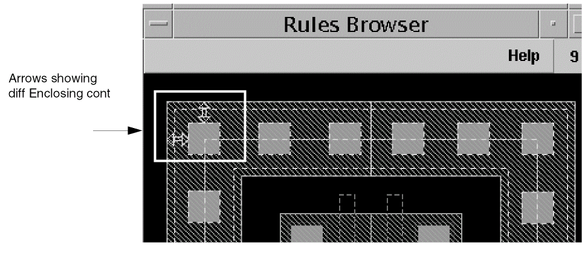

7
Defining and Installing Devices
This chapter discusses the following:
Bringing up the Install Device Form
To bring up the Install Device form to begin defining a device,
-
From the CIW, choose Tools – Technology File Manager.
The Technology File Manager form is displayed.
 -
From the Technology File Manager form, choose Install Device.
The Install Device form appears.

Guard Rings
This section covers the following topics:
About the Install Device Form for Guard Rings
Defining and Installing a New Guard Ring
Defining a New Guard Ring from an Existing Guard Ring
Modifying an Existing Guard Ring
About Guard Rings
Guard rings are a special type of ROD multipart path that are used to encircle one or more objects, e.g. devices or device chains. They are intended to be either p-diffusion or n-diffusion.
Guard rings are displayed in the Install Device form consist of the following parts:
-
Diffusion layer
This layer is the master path. It is an ordinary path with flush or offset ends that must enclose all other parts of the guard ring, except the implant layer when one is required. It is recommended that you choose a p-diffusion or n-diffusion, or another type of diffusion, for the Diffusion layer field. A master path extending outside of an offset subpath, or which is wide compared to the objects which it will enclose, will require a larger Enclosed by value on the Create Guard Ring form. -
Metal layer
This layer is an offset subpath. The layer specified for the Metal layer cyclic field encloses the vias (set of subrectangles), which are centered within the Metal layer. You can specify a positive or negative offset. The offset is measured from the centerline of the Diffusion layer to the centerline of the Metal layer. The Metal layer is entirely enclosed by the Diffusion layer. -
Contact layer
This layer is the set of subrectangles, which are vias. The layer specified for the Contact layer cyclic field is entirely enclosed by the Metal and the Diffusion layer; the vias are centered within the Metal layer. It is recommended that you choose a via layer for the Contact layer field, with its function defined ascutorli. -
Implant layer
This layer is the second, optional, offset subpath. You can define only one implant layer for a guard ring. When specified, the layer chosen for the Implant1 layer cyclic field must entirely enclose the Diffusion layer. It is recommended that you choose an implant layer for the Implant1 layer field, with its function defined asnplusorpplus.
For example, the guard ring shown below consists of a master path on a diffusion layer, a subpath on a metal layer, and a set of subrectangles on a via layer. The centerlines of all three are coincident; the diffusion layer encloses the metal layer, which encloses the vias.
An example of a guard ring with the metal layer (and therefore, also the vias) offset from the diffusion layer by a positive number is shown below.
The offset is measured from the centerline of the diffusion layer (which is behind the metal layer) to the centerline of the metal layer.
The system creates guard rings in a clockwise direction, starting at the center of the longest side for polygons, top or left longest side for rectangles, and center of the left side for squares.
Guard rings are a limited, special type of multipart path (MPP.) The technology file associated with the library you are using might contain templates for guard rings and other types of MPPs. When you select guardRing for Device Type on the Install Device form, the names of MPP templates defined in your technology file that match guard ring specifications (a master path with truncate or extend ends, one set of subrectangles, and one or two offset subpaths, on any layers) appear in the Name field.
About the Install Device Form for Guard Rings
Technology Library sets the library containing guard ring templates you want to view, or in which you want to install a new or modified guard ring template. You can view guard ring templates whether a library is editable or not; when a library is not editable, the OK and Apply buttons are grayed out. To define a new guard ring or modify an existing guard ring, select an editable library (the OK and Apply buttons are active).
View Device Configuration lets you display a small window showing the guard ring configuration. This button is active when all required rules are entered in the form or defined in the technology file. You can click this button to display or refresh the image of the current guard ring configuration.
Device Type lets you select the kind of device you want to view, update, or install; for guard rings, you would select guardRing. When you select guardRing, the form changes to display the fields appropriate for guard rings.
Name lets you see the names of the guard ring templates defined in your technology file. These guard rings consist of: one master path with flush or offset ends, one or two offset subpaths, and one set of subrectangles.
This form also lets you define a new guard ring template by typing a unique name in the Name field and entering or changing the values for the other fields as desired. When you define a new guard ring and click Apply or OK to install it, the system saves the new template to the technology file in virtual memory.
Delete lets you remove the guard ring template from your technology file from virtual memory. You will be asked whether you want to save your technology file on disk when you click OK or Cancel.
Layers The Layers button is turned on by default when the Install Device form first appears. The lower portion of the form shows the layers defined for the selected device.
For guard rings, the layer fields are labeled Diffusion, Contact, and Metal. Each of three fields is associated with a specific part of the guard ring, as follows:
Diffusion lets you see or choose the layer for the diffusion layer (master path).
Contact lets you see or choose the layer for the via (set of subrectangles).
Metal lets you see or choose the layer for the offset subpath that surrounds the set of subrectangles.
Add Implant Layer displays a new section at the bottom of the Install Device form that allows you to see or define an implant layer to enclose the diffusion. Defining an implant layer is optional. When you click Add Implant Layer, the software displays the following section at the end of the Install Device form:
Implant1 identifies the layer as an implant layer; this cyclic field lets you see or choose the implant layer to enclose the diffusion. You can only define one implant layer for a guard ring.
When you are defining a new guard ring, you might need to define an implant layer around the diffusion, depending on the material you chose for the diffusion (master path). For example, if your technology file does not contain n-diffusion or p-diffusion layers, you will need an implant layer.
Enclosing Diffusion tells you that the implant layer encloses the diffusion layer.
Delete lets you delete the implant layer for the current guard ring.
Rules displays the Rules Browser window and redraws the lower part of the Install Device form to show the process design rules for the layers you specified with the Layers option. For example, the Rules section might look like this:
The top of the Rules section lets you see, enter, or change the values for Dimensions and Spacing. When Techfile Default is on, the values match the defaults in the technology file; when Techfile Default is off, the values do not match the defaults in the technology file. When the values are blank, there are no default values defined in the technology file.
layerName Dimensions specifies the width and length of vias on the layer specified for Contact in the Layers section. In the example above, this rule states that the size of vias is 0.1400 user units wide and 0.1400 user units long. Techfile Default indicates that these values match the default minWidth values in the technology file. You can change the via width and length to less than the technology file default value, and the form will not reset to the technology file value.
layerName Spacing specifies the space between vias on the layer specified for Via. In the example above, this rule states that the spacing between vias is 0.1500 user units. Techfile Default is on to indicate that this value matches the default minSpacing value in the technology file.
Techfile Default indicates whether the values currently displayed for the Dimensions and Spacing rules match the default values in your technology file. When the Techfile Default field is on, the values match.
When you enter or change to a value that does not match the default value in the technology file, and click anywhere else in the Install Device form, Techfile Default turns off to indicate that the value does not match the default value in the technology file. To restore the default values from the technology file for the Dimensions or Spacing fields, turn on Techfile Default.
The center of the Rules section displays the names of Diffusion or Metal enclosing via rules, if they are not defined in the technology file. The values are blank; you must enter a value for all missing rules.
missingRule is the name of a required enclosure rule that does not have a default value defined in the technology file. In the example above, the Oxide Enclosing Via2 and Metal1 Enclosing Via2 constraint fields are blank, meaning that there are no rules defined in the technology file for the layers enclosing Via2.
The bottom of the Rules section lets you see, enter, or change the values for Offset and Width fields.
For the Width fields, the system provides default values representing the minimum values required, calculated based on the via and enclosure layers. If you change values or enter new values and click OK or Apply, it verifies that the values of these fields are large enough to conform to the rules for guard rings: Metal layer encloses Via layer, Diffusion layer encloses Metal layer, and if there is an implant layer, Implant1 layer encloses Diffusion layer.
layerName Offset specifies the distance between the centerline of the Metal layer (offset subpath) from the centerline of the Diffusion layer (master path). You can specify a positive or negative offset. The default is zero, meaning that the centerlines are coincident.
layerName Width specifies the width of the Diffusion layer (master path) specified in the Layers section.
layerName Width specifies the width of the Metal layer (offset subpath) specified in the Layers section.
layerName Width specifies the width of the Implant1 layer (offset subpath), when an Implant1 layer is specified in the Layers section.
Adding or Modifying Rules: System Verification
The system performs the following verification for the Rules section:
-
When you click the View Device Configuration button, the system verifies that values have been entered for all blank fields. If a value is blank, the system displays a dialog box, stating that the rule must be specified; for example:
("diff" "drawing") Over ("cont" "drawing") Enclosure Rule must be specified.
-
When you type a new or different value into the input field for the Offset or Width rules in the bottom part of the Rules section, and either click in a different Rules input field or click Apply or OK (or Cancel after having clicked Apply), the system compares the values for the required rules, and verifies that:
- The value for every rule is a multiple of the manufacturing grid in user units.
- The width of the Metal layer surrounding the set of subrectangles on the Contact layer is equal to or greater than the width of the set of subrectangles, plus two times the metal-to-via enclosure rule from the technology file:
Metal layer width > via layer width + (metal-to-via enclosure rule x 2)
-
The width of the Diffusion layer surrounding the Metal layer is equal to or greater than the width of the Metal layer, plus two times the diffusion-to-via enclosure rule from the technology file:
Diffusion layer width > via layer width + (diffusion-to-via enclosure rule x 2)
- The width of the Diffusion layer is greater than or equal to the width of the Metal layer.
- If there is an Implant1 layer, the width of the Implant1 layer is greater than or equal to the width of the Diffusion layer.
If the values do not pass the verification, the system adjusts the widths of the layers and replaces the numbers in the input fields so that they satisfy the rules, as described above.
Rules Browser Window
The Rules Browser window lets you see how design rules are applied graphically, using a double-ended arrow. The rules Browser is not an accurate picture of the current guard ring. For an accurate picture, see the View Device Configuration Window.
If you specified diff, cont, and metal1 for layers, then the picture in the Rules Browser window might look like as shown below:
When you click in an design rule input field, the system shows you how the design rule is being measured by displaying double-ended arrows in the Rules Browser. For example, for diff Enclosing cont, the arrows look like this:
View Device Configuration Window
The View Device Configuration button lets you display a small window showing the guard ring configuration. When any rule information is missing, clicking on this button displays a dialog box saying that you must specify the missing rule. When all required information is present, clicking on this button displays or refreshes the image of the guard ring configuration.
In the example of the guard ring with diff, cont, and metal1 specified for layers, the View Device Configuration window might look like this:
Parameter Defaults lets you see and change whether the Diffusion layer (master path) guard ring is choppable and the spacing method for vias. When you turn on Parameter Defaults, the lower part of the Install Device form is replaced with the following fields:
Diffusion Path Choppable lets you make the Diffusion layer (master path) choppable (on) or not (off). All other parts of the guard ring (Metal, Contact, and Implant1 layers) are always choppable. The default for the Diffusion layer is choppable.
Contact Spacing Method lets you control spacing between vias. When the value is distribute, the system uses the defined spacing rule to place vias until there is no space for another via in each guard ring segment, then distributes remaining space as evenly as possible between the vias in multiples of the grid space specified by the mfgGridResolution rule in the technology file. If any space remains, it is placed after the last via in the segment.
When the value is minimum, the system uses the specified spacing rule to place vias in each guard ring segment until there is no space for another via, then leaves all excess space after the last via in the segment.
Defining and Installing a New Guard Ring
Defining a new guard ring template and installing it in your technology file requires the following tasks:
Choosing the Technology Library, Device Type, and Device Name
Specifying Guard Ring Parameter Defaults
Installing the Guard Ring Template in the Technology File
Choosing the Technology Library, Device Type, and Device Name
- From the Technology Library cyclic field, choose the technology library in which to install the new guard ring.
- For the Name field,
The Layers button is turned on by default when the Install Device form first appears. Now you are ready to specify the layers for your new guard ring.
Specifying Guard Ring Layers
To specify the layers for the new guard ring, in the Install Device form, follow the steps below.
- From the Diffusion cyclic field, choose the layer for the diffusion, which encloses the layer you choose for Metal.
- From the Contact cyclic field, choose the layer for vias.
-
From the Metal cyclic field, choose the layer that encloses the layer you chose for Contact.
For example, you might choose the following layers for your new guard ring:
 - If you the material you chose for diffusion needs to be enclosed in an implant layer, follow these steps:
Now you are ready to specify the rules for your new guard ring.
Specifying Guard Ring Rules
To specify the rules for the new guard ring, in the Install Device form, follow the steps below.
-
Click to turn on Rules.
The lower part of the Install Device form is redrawn to show the applicable design rules from the technology file for the layers you selected.
If a required enclosure rule for the selected layers is not defined in the technology file, the system displays the name of the rule and a blank input field. For example, if the diff, cont, and metal1 layers are specified, the system checks the technology file for the diff Enclosing cont rule, and not finding it, added diff Enclosing cont to the Rules section, as shown below:
When you click Rules, the system also displays the Rules Browser window. This window lets you see how each rule is measured: when you click the cursor in an design rule input field in the Rules section, the system displays double-ended arrows in the Rules Browser to show how the rule is measured. For example, for diff Enclosing cont, the arrows look like this:
 -
Check how any of the design rules are used by clicking in an input field and looking at the Rules Browser.
When the input area for a rule is blank, meaning the required rule is not defined in the technology file, you must provide a value. -
If the input field for a design rule is missing, type in the value you want.
A missing rule appears in the Rules section until you click Apply or OK and save the new value to the technology file in virtual memory; then, since the rule is no longer missing, the Rules section no longer displays it.
Once there is a value for every rule, you can look at the configuration of the guard ring in the View Device Configuration window. -
To see the current guard ring configuration, click the View Device Configuration button at the top of the Install Device form.
If the value for a rule is missing and you click View Device Configuration, the system displays a dialog box asking you to enter a value for the rule.
For the example using the diff, cont, and metal1 layers, the View Device Configuration window might look like this:
Any time you make a change to the rules, you can click the View Device Configuration button to refresh the image in the View Device Configuration window. You do not have to click Apply or OK to see the results of a change you make to a design rule. - If you want to change the value for a design rule, type over the existing value.
-
To see the results of changing the value for a rule, click View Device Configuration at the top of the Install Device form.
The View Device Configuration window is refreshed, showing a current picture of the guard ring.
The system checks the values in the Rules section to make sure the guard ring will be created correct-by-construction. If it is not, the system adjusts the values. For a description of the verification performed, see “Adding or Modifying Rules: System Verification”.
Now you are ready to specify the parameter defaults for your guard ring.
Specifying Guard Ring Parameter Defaults
To specify whether the Diffusion layer choppable and how the vias are spaced, follow the steps below.
-
Click to turn on Parameter Defaults.
The lower part of the Install Device form is redrawn to show these fields:
The default is for the Diffusion layer (master path) to be choppable. All other parts of the guard ring (Metal layer, Contact layer, and Implant1 layer, when there is one) are always choppable. - To prevent the Diffusion layer from being chopped (cut), turn off Diffusion Path Choppable.
-
For Contact Spacing Method, choose distribute or minimum.
For more information see Contact Spacing Method. -
To see what your change to the spacing between rectangles looks like, click View Device Configuration at the top of the Install Device form and look at the View Device Configuration window.
The View Device Configuration window refreshes, showing a current picture of the guard ring.
Now you are ready to install the new guard ring template in the technology file.
Installing the Guard Ring Template in the Technology File
Once you have completely defined your new guard ring and are ready to save the guard ring template in the technology library, follow the steps below.
-
On the Install Device form, click Apply or OK.
If you entered a value for a rule that did not have a default in the technology file (a missing rule), then when you click OK or Apply, the system displays a dialog box asking if you want to add the rule to the technology file, like this:
-
If the Save All Rules dialog box appears, and you want to save all new rules to the technology file in virtual memory, click Yes; otherwise, click No.
When you click OK (or Cancel, after clicking on Apply), the system displays a dialog box, asking if you want to save the technology file to disk. When you click Yes, all work you have performed during the current editing session is saved from the technology file in virtual memory to the technology file on disk.
- If you want to save your work to the technology file on disk, click Yes in the Install Device dialog box; otherwise, click No.
Your new guard ring has been saved to the technology file in virtual memory.
For messages that can appear after you click Apply or OK.
Defining a New Guard Ring from an Existing Guard Ring
To define a new guard ring template based on the definition of an existing guard ring template, do the following on the Install Device form:
- From the Technology Library cyclic field, choose the technology library containing the guard ring template you want to use as a base.
- From the Device Type cyclic field, choose guardRing.
-
From the Name cyclic field, choose the name of the guard ring you want to use as a base.
The form displays the definition of the selected guard ring. - In the Name field, change the existing name to a unique name for the new guard ring template.
- Change whatever layers, rules, and parameter defaults you want for the new guard ring. For specific instructions about specifying layers, rules, and parameter defaults, see “Defining and Installing a New Guard Ring”.
-
To see the results of your changes to the existing guard ring, click View Device Configuration at the top of the Install Device form.
The View Device Configuration window is refreshed, showing a current picture of the guard ring. -
To install the new guard ring in your technology library,
If you entered a value for a rule that had a blank input field, the software displays a message box, asking if you want to add new rules to the technology file in virtual memory.
You have completed creating a new guard ring from an existing guard ring.
Modifying an Existing Guard Ring
To change the definition of an existing guard ring template, do the following on the Install Device form:
- From the Technology Library cyclic field, choose the technology library containing the guard ring template you want to redefine.
- From the Device Type cyclic field, choose guardRing.
-
From the Name cyclic field, choose the name of the guard ring template you want to redefine.
The form displays the definition of the selected guard ring template. - Change whatever layers, rules, and parameter defaults you want for the redefined guard ring template. For specific instructions about specifying layers, rules, and parameter defaults, see “Defining and Installing a New Guard Ring”.
-
To see the results of your changes to the guard ring, click View Device Configuration at the top of the Install Device form.
The View Device Configuration window is refreshed, showing a current picture of the guard ring. -
To install the redefined guard ring in your technology library,
If you entered a value for a rule that had a blank input field, the software displays a message box, asking if you want to add new rules to the technology file in virtual memory.
You have completed modifying an existing guard ring.
Deleting a Guard Ring
To delete a guard ring template from the technology library, do the following on the Install Device form:
- From the Technology Library cyclic field, choose the technology library containing the guard ring template you want to delete.
-
From the Device Type cyclic field, choose guardRing.
- From the Name cyclic field, choose the name of the guard ring template you want to delete.
-
Click Delete.
The software displays a verification message box, asking if you want to remove the selected guard ring the technology library.When you delete a guard ring template, it is immediately removed from the technology file in virtual memory. The next time the technology file is saved to disk, it is also removed from disk. Once you click Yes, you cannot retrieve this guard ring template; if you want it again, you must redefine and reinstall it. - To remove the guard ring template from the technology library in virtual memory, click Yes.
You have completed deleting a guard ring from the technology file in virtual memory.
Return to top